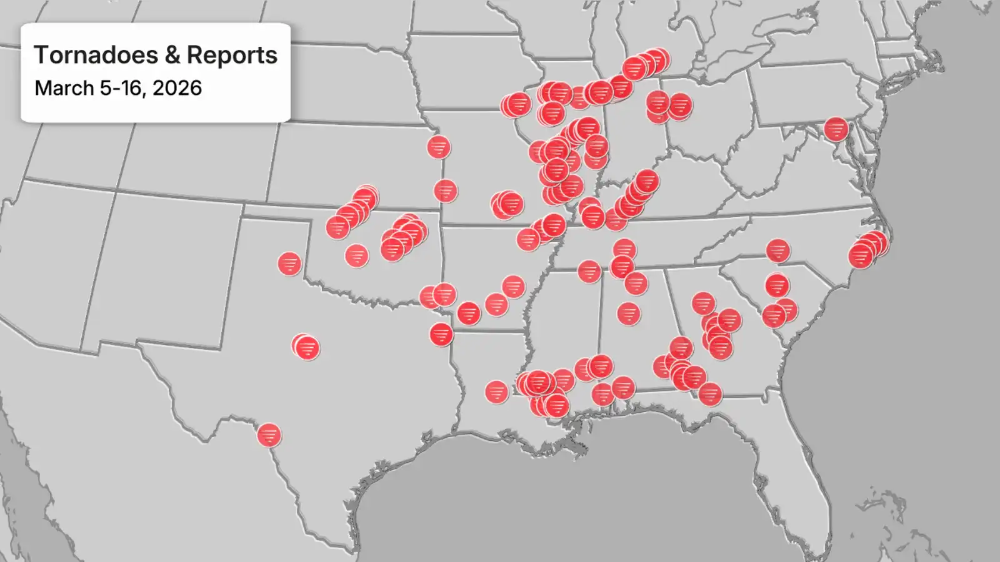
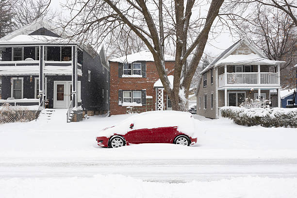
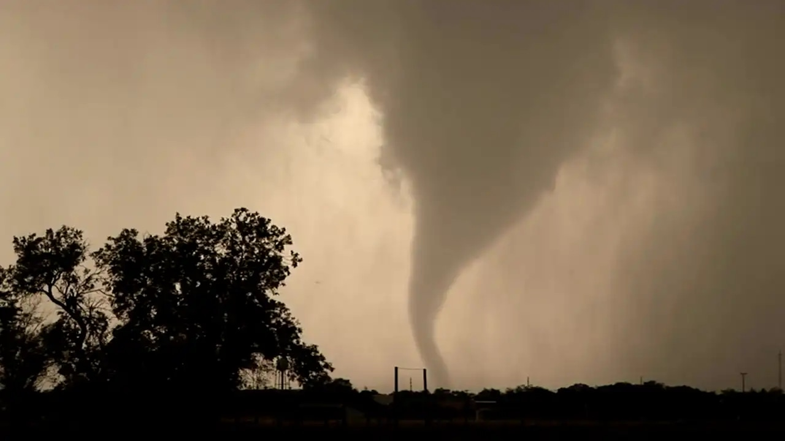

Debris is left behind following a tornado that hit several cities in southwest Michigan on March 7, 2026 (Bill Pugliano/Getty Images)
Three severe weather outbreaks and a historic blizzard and snowstorm have hit parts of the U.S. in 12 days in March. They aren't the only examples of extreme weather.
Written by: Johnathan Erdman

In less than two weeks, three severe weather outbreaks, a record-smashing blizzard, a Hawaii soaking and a separate windstorm have ranked across the county in the typically stormy month of March.
It's not your imagination. If you've been following our coverage since the first week of March, you've probably wondered if the nation's weather has been on steroids.
Over 170 tornadoes have been confirmed by the National Weather Service from march 5-16. There have also been over 1,700 reports of thunderstorm winds, thunderstorm wind damage and large hail in the three outbreaks combined.
Here's a rundown of what's happening since March 5.
(Photo Credit: Confirmed tornadoes and reports of tornadoes from the three outbreaks from March 5-16, 2026 (Data:NOAA/NWS/SPC))
Outbreak #1
The first severe weather outbreak from March 5-7 didn't spawn an agregious number of tornadoes. Only 26 twisters were confirmed by the National Weather Service.
But eight of those were strong (at least EF2) and four of those were killer tornadoes. That includes an EF3 tornadoes in Union Lake and Union City, Michigan (3 killed), another EF3 in Beggs, Oklahoma (2 killed), an EF2 that killed two motorists near Fairview, Oklahoma, and a EF1 in Edwardsburg, Michigan (1 killed).
Late on the night of March 7, parts of Starr County in south Texas were clobbered by large hail, 70 mph winds and the area's worst flash flooding in over 17 years.
"March weather has clearly marched again."
- Johnathan Erdman
Outbreak #2
Just a few days later, a more widespread rash of severe thunderstorms ripped across parts of the central, southern and eastern U.S., including some areas that were hit in the first outbreak.
The NWS confirmed 98 tornadoes from the March 9-12 outbreak. While more numerous than the first outbreak, there were only four strong tornadoes in this event.
One supercell thunderstorn spawned 12 separate tornadoes across northeast Illinois into northwest Indiana. The strongest of these -- rated EF3 -- tore a 35-mile-long path for over an hour across the south side of Kankakee, Illinois, into Aroma Park, then Lake Village and Roselawn, Indiana. Three were killed and 11 injured by the up to half-mile wide tornado.
This same supercell also produced what appeared to be an Illinois state record large hailstone, at over 6.5 inches in diameter.
Historic Blizzard
It wasn't all about severe thunderstorms.

From the weekend of March 14-15 into Monday the 16th, a powerhouse blizzard hammered parts of the Northern Plains and western great Lakes.
This wasn't an ordinary March Blizzard. Named Winter Storm Iona by The Weather Channel, this storm dumped 2 to 4 feet of snow over a large swath of norther Wisconsin and northern Michigan.
Iona was the heaviest two-day snowstorm on record at the NWS office outside of Marquette, Michigan (36.3 inches). It was also Green Bay's heaviest snowstorm since 1888 (26.6 inches)
Wind gusting from 50 to 70 mph shut down sections of interstates in whiteout conditions and whipped drifts as high as 10 feet in parts of Wisconsin and Michigan's Upper Peninsula.
(Photo Credit: The Weather Channel @weatherchannel on X/Twitter)
Outbreak #3

On the warm side of the same storm that hammered the upper Midwest with blizard conditions, a third outbreak of severe thunderstorms ranked across parts of the Midwest, South and East from March 15-16.
Like the first outbreak, the number of tornadoes was relatively few, with 37 confirmed. But unlike that first rash of severe weather, all of those tornadoes were rated either EF0 or EF1 and none of them were deadly.
Instead, the main story was the over 800 reports of severe thunderstorm wind damage or wind gusts from eastern Texas to the East Coast of Florida.
(Photo Credit: The Weather Channel @weatherchannel on X/Twitter.)
What Else?
That wasn't the only active weather in the first half of March.
A powerful, slow-mobing Kona storm pummeled Hawaii for days unleashing flooding rain, high winds and even blizzard conditions atop the Big Island's volcanic peaks.
Before Winter Storm Iona and the third outbreak, a separate widespread windstorm across the northern U.S. from the Northwest and northern Rockies into the Great Lakes spread one western Nebraska wildfire into the state's largest on record and spread three other large fires in the central part of the state.
As we write this piece, a blistering heat wave is threatening to smash all-time March records in dozens of western cities and up to nine states